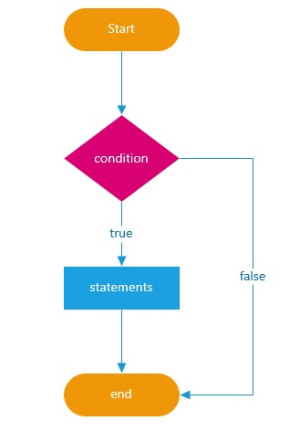

O que são Estruturas de Controle
- Um program é executado de cima para baixo
- Com as estruturas podemos modelar o fluxo do programa
- Ou seja, dependendo dos valores de statements, ele tomará um caminho diferente

Estrutura Condicional: if
- O programa vai executar um bloco de código, SE algo acontecer
- Onde algo é a condição imposta por um statement
- que resulta em um boolean (treu or false)
- let idade = 19
if(idade > 18) {
console.log("Pode entrar")
}
Estrutura Condicional: else
- Podemos executar um outro bloco de código, caso a instrução do if não seja atendida
- Ou seja, Se não executar o bloco if, Execute o bloco else
- let nome = "Pedro"
if(nome == "João") {
console.log("Seu nome é João");
} else {
console.log("Seu nome não é João");
}
Estrutura Condicional: else if
- Ainda podemos encadear mais condições com else if
- Ou seja, antes de executar um else ou até mesmo sem ele podemos verificar mais condições
- let a = 5;
let b = 3
if(a + b == 3) {
console.log("O resultado é 3");
} else if (a == 4){
console.log("O valor de a é 4");
} else if (b == 3) {
console.log("O valor de b é 3");
} else{
console.log("Nenhuma das condições acima") }
Estrutura Condicional: switch
- Quando há necessidade de vários ifs, podemos utilizar p switch/case
- Para sair de um case podemos utilizar o break
- Podemos inserir uma expressão default, para caso nenhum valor for correspondido
O que são estruturas de repetição
- A ideia é repetir uma ação até atingir uma condição
- Ao invês de repetirmos o mesmo código várias vezes criamos um statement que fará uma checagem em cada loop
Estrutura de repetição:While
- Fará uma ação até que a condição seja atingida
- Precisamos realmente 'definir um fim' para o loop, para não termos o problema de loop infinito
-
let x = 10;
while(x > 0){
console.log(x);
x = x - 1;
}
Estrutura de repetição:do while
- Semelhante ao while, porém a estrutura muda um pouco
-
let y = 0;
do {
console.log(y);
y = y + 1
} while(y < 5)
Estrutura de repetição:for
- Semelhante ao while, porém amplamente utilizado
-
for(let numero = 2; numero < 100; numero = numero *2){
console.log("O número é: " + numero);
}